Create frames with weld gaps
In this procedure, the weld gap values are exaggerated for display purposes.
Create frames and apply a weld gap to all members.
-
Choose the Frame command
 .
. -
On the Frame Options dialog box, click the Set weld gap value option. Type 35 in the value box.
-
Click Apply, and then click OK.
-
Select the path elements, and then right-click.
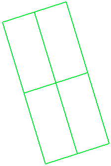
Click Finish.
-
Turn off the sketch element display.
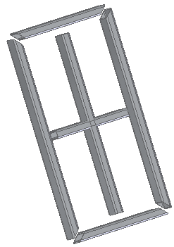
Set weld gap for all frames
Change the weld gap value globally.
-
In Assembly PathFinder, select the frames collector shown.
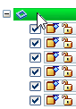
-
Click the Edit Definition button.
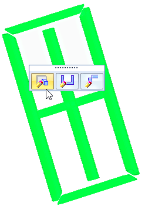
-
On the Frame command bar, click the Frame Options button.
-
Type 70 in the Set weld gap value box. Click Apply, and then click OK.
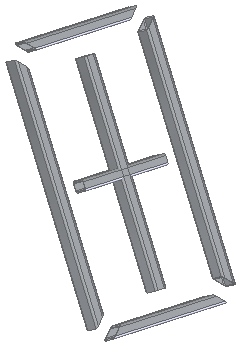
Set weld gap for single frame
Change the weld gap value at one end of a single frame.
-
Select a single frame.
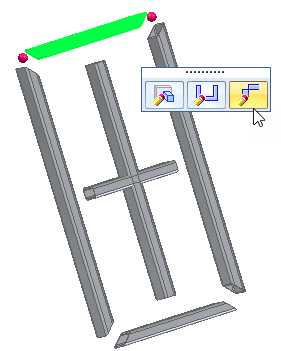
Note:If you click Edit End Conditions at this point, both ends (red dots) are edited.
-
To edit a single end, click the end shown.
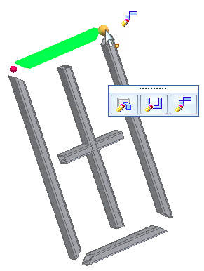
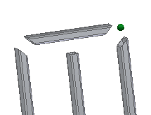
-
On the Frame command bar, click the Weld Gaps option and type 150.
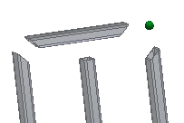
Click Finish.
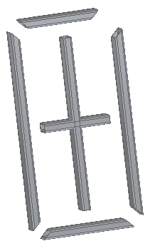
Clear overrides
Observe the result when Clear Overrides is selected.
-
In Assembly PathFinder, select the frames collector shown.
-
Click the Edit Definition button.
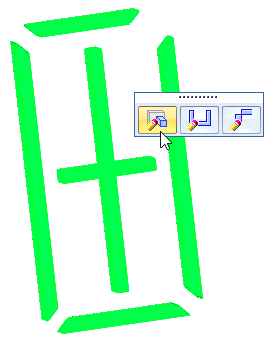
-
On the Frame command bar, click the Frame Options button.
-
On the Frame Options dialog box, click Clear Overrides.
Notice the message:
Cleared corner treatment overrides for 1 end(s).
Click OK, and then click Finish.
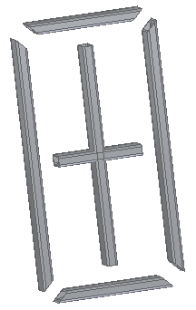
How do I
Add a custom frame componentCreate a structural frame
Save a structural frame component
Edit frame end conditions
Edit a frame cross section
Create a frame end cap
Edit a frame end cap
Trim or extend a frame
Learn more
Structural frame design workflowSaving frame components
Saving structural frame components
Look up more details
Frame commandFrame command bar
Frame Options dialog box
Creating a structural frame
Adding members to a frame
Edit End Conditions command
Edit Cross Sections command
Frame snap points
Frame End Cap command
End Cap Options dialog box
Frame Origin command
Trim/Extend command
Trim/Extend command bar
Adding custom frame components to a local library
Creating a custom structural frame component: best practices
Defining hole locations in a frame